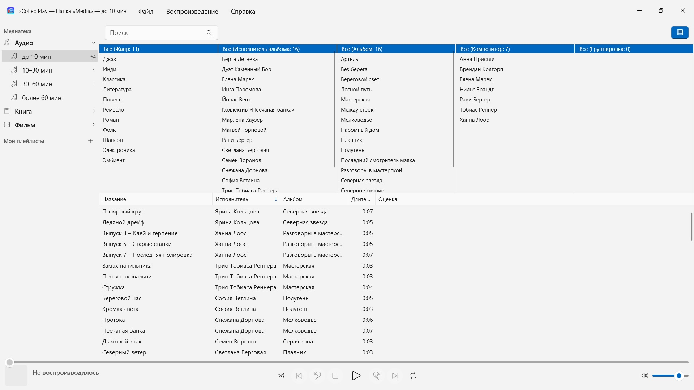
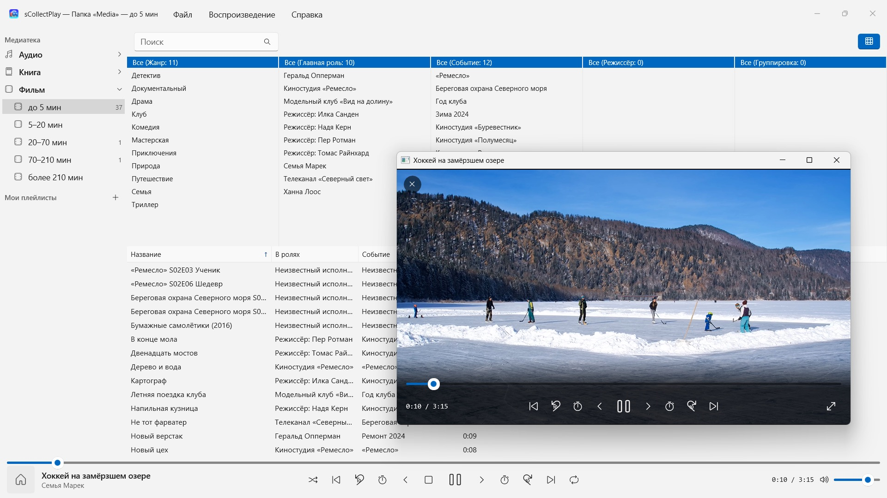

sCollectPlay
Выберите папку и воспроизводите — без импорта и копирования
В Microsoft Store с ноября 2026 г.Выберите папку и воспроизводите: музыка, аудиокниги, подкасты, фильмы и электронные книги упорядочиваются сами – без импорта, без учётной записи, без облака. А также медиатеки iTunes (XML) с их плейлистами.


sCollectPlay воспроизводит ваше собрание там, где оно лежит: в любых папках, на внешних дисках или на сетевом диске. Выберите папку — и музыка, аудиокниги, подкасты, фильмы и электронные книги упорядоченно встанут в один список: без импорта, без копирования и без каких-либо изменений в ваших файлах.
24 языка: английский, немецкий, чешский, хорватский, нидерландский, финский, французский, венгерский, итальянский, японский, корейский, норвежский (букмол), персидский, польский, португальский, румынский, русский, испанский, шведский, тайский, турецкий, украинский, китайский (упрощённый и традиционный). Приложение следует языку интерфейса Windows.
ДВА ИСТОЧНИКА
- Папка: sCollectPlay просматривает папку вместе с вложенными папками и читает название, исполнителя, альбом, жанр и длительность из самих файлов. Несколько папок можно объединить в один список. При следующем запуске последнее считанное состояние появляется сразу, а «Обновить сканированные папки» (Ctrl+R) читает только новые, изменённые и удалённые файлы.
- iTunes XML: медиатека iTunes для Windows с плейлистами, оценками и счётчиками воспроизведений. Чем является трек — музыкой, аудиокнигой, подкастом, художественным фильмом, сериалом или видеоклипом, — приложение берёт из XML.
ПОРЯДОК БЕЗ УСИЛИЙ
Папка не говорит, песня это или аудиокнига. Поэтому при сканировании sCollectPlay распределяет файлы по длительности: аудио до 10 мин, 10–30 мин, 30–60 мин и более 60 мин, видео — от коротких клипов до фильмов длиннее трёх с половиной часов. Так песни, выпуски аудиоспектаклей и аудиокниги стоят отдельно, и вам ничего не нужно настраивать. Электронные книги и PDF приложение распознаёт по расширению.
Заголовок окна всегда показывает, что загружено: какая папка, какой XML.
НАЙТИ
- Поиск по названию, исполнителю, альбому, жанру и другим полям — в том числе внутри плейлистов
- Обозреватель столбцов по жанру, исполнителю, альбому, композитору и группировке, с множественным выбором в каждом столбце. Тысячи исполнителей без бесконечной прокрутки: группировка по первым буквам
- Столбцы можно свободно показывать и скрывать, среди них имя файла, битрейт, частота дискретизации и размер; ширину и порядок вы меняете мышью
- Недавно использованные папки и XML-файлы ждут в меню «Файл», а при следующем запуске последний источник снова на месте
ВОСПРОИЗВЕДЕНИЕ
- Аудио с очередью, перемешиванием и повтором
- Видео в отдельном окне, с замедлением, покадровым шагом, выбором звуковой дорожки и субтитров и полноэкранным режимом
- Большинство форматов Windows воспроизводит сама — MP3, AAC, FLAC, OGG, Opus и WMA, а также MP4, MKV, AVI, WMV и MPG. То, что ей незнакомо, например AIFF, DSD или FLV, приложение передаёт программе, которая назначена в Windows для этого типа файлов, — например VLC
- Собственные и смарт-плейлисты
- Любой плейлист можно экспортировать вместе с его файлами как папку со списком M3U8 — на SD-карту, USB-накопитель или в папку, например для VLC на Android-устройстве
ВАШИ ФАЙЛЫ ОСТАЮТСЯ ТАКИМИ, КАК ЕСТЬ
sCollectPlay не записывает теги, не изменяет метаданные и ничего не удаляет.
НА ВАШЕМ ПК, И ТОЛЬКО ТАМ
Ни учётных записей, ни облака, ни аналитики, ни рекламы. Приложение работает только с теми папками, которые вы ему дали. Каждый язык — с полной справкой.
sCollectPlay Lite · Бесплатно — Облегчённая версия sCollectPlay: просто откройте папку, файл iTunes XML или медиатеку sCollect и воспроизводите из них музыку, фильмы, аудиокниги и подкасты — со списками воспроизведения, звуковыми дорожками и дорожками субтитров, замедленным воспроизведением и покадровым переходом. Один источник за сеанс; браузер по столбцам, собственные списки воспроизведения и недавно использованные источники доступны только в полной версии.
- Требуется Windows 11 или новее
- 24 языка
- Поддержка: SwiftAppsBavaria@gmx.net
- Политика конфиденциальности sCollectPlay и sCollectPlay Lite